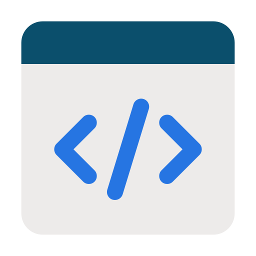
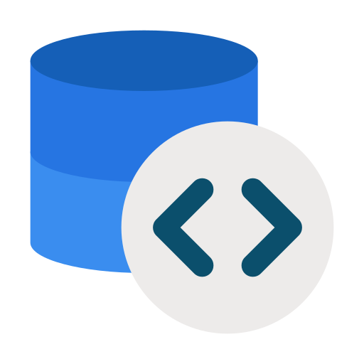

Kartika Jatilaksono
Backend Developer
| 📩 | : | kartikajls.id@gmail.com | |
| 👤 | : | in/kartikajls | |
| 🔗 | Github | : | github.com/kartikajls |
About Me
A motivated and adaptable individual with a strong interest in technology and continuous learning. Experienced in working with teams, managing responsibilities, and solving problems effectively. Eager to develop new skills, take on new challenges, and contribute positively to a professional working environment.
Project

Building clean, responsive, and user-friendly web interfaces using HTML, CSS, and JavaScript.

Developing reliable and maintainable backend systems, REST APIs, and services using Go, PostgreSQL, and Docker.
Analyzing and visualizing data to identify patterns, generate insights, and support data-driven decision making.
Education
| Full-Time Backend with Golang (FTGO) - Bootcamp Hacktive8 | (Mei - September 2026) |
| Online Course - Jakarta |
| Economic Development - Airlangga University | (2014-2019) |
| GPA 3.16 / 4.00 |
Work Experience
| CEO of Kawal Manten Organizer | 2024 - Now | |
| Mojokerto - Surabaya | ||
| 1. | Manage and monitor arround IDR 50 – 150 million wedding event budgets, ensuring proper expense allocation, accurate financial records, and effective cost control. | |
| 2. | Prepared financial plans and budget estimates for promotional activities, including wedding exhibitions and other business development events. Also, expenses for editing video for promotion. | |
| 3. | Lead a team of 7–12 members in planning and executing wedding events, coordinating task assignments, event operations, and on-site activities to ensure smooth event delivery. | |
| 4. | Evaluate the expenses and prioritized resource allocation based on business needs and available budget. Also, Identify and coordinate with suitable vendors based on clients’ budgets, then present each vendor’s pricing options to clients for consideration. | |
| 5. | Assisting engaged couples in ensuring the success of their wedding events. |
| Staff Administration Tata Usaha & Library of Junior High School | 2024 - Now | |
| Mojokerto | ||
| 1. | Developed and maintained a digital library catalog using Microsoft Excel, organizing and managing book inventory data to improve data accessibility and library administration. | |
| 2. | Managed the book borrowing and return process for students and teachers, maintaining accurate records and ensuring efficient access to library resources. | |
| 3. | Lead the 2025 ANBK (Asesmen Nasional Berbasis Komputer) program, coordinating team members, preparing students and technical requirements, and resolving operational issues to ensure the assessment was completed successfully. |
Certification
| 1. | Completed | Fulll-Time Backend with Golang | Hacktive8, Online Course | September 2026 |
| 2. | Completed | Introduction to RStudio | Research Institute for Socio-Economic Development | January 2022 |
| 3. | Completed | Intro to Data Analytics | RevoU, Online Course | Februari 2022 |
| 4. | Completed | Data Science with Python | Anak Teknik Indonesia, Online Course | April 2022 |
| 5. | Completed | Data Analytics for IT Systems Designers | karier.mu (Prakerja) Online Course | Desember 2022 |